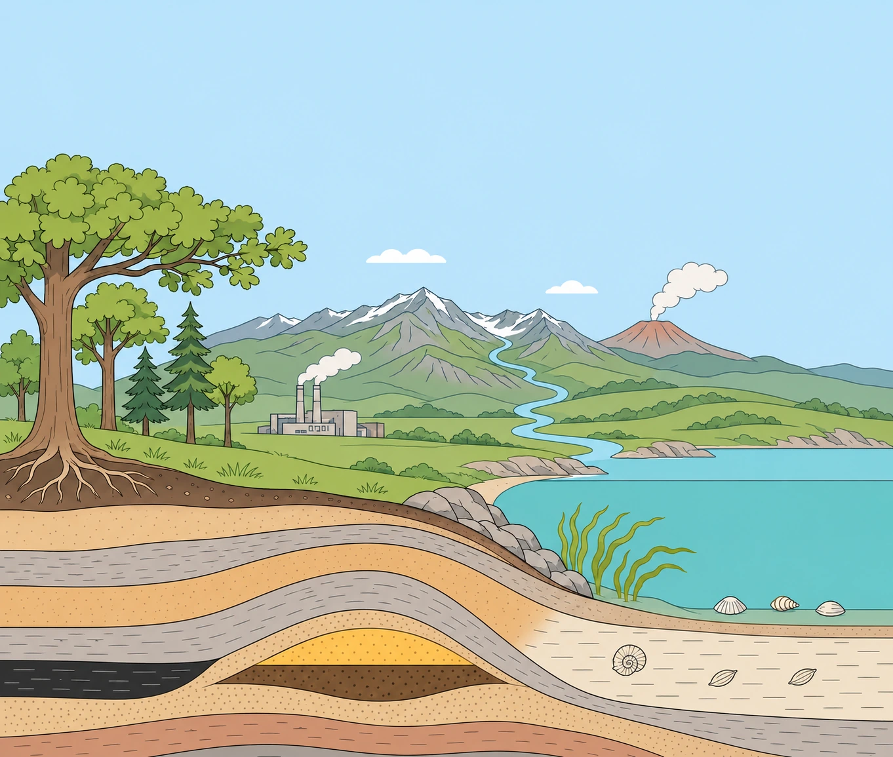

Naturgeografi · Byg figuren Alfa
Byg kulstofkredsløbet
Sæt navn på puljerne, og byg derefter kredsløbets pile i to proceslag.
En pulje er et lager for kulstof. Sæt navnene på puljerne i landskabet.

Skematisk tværsnit uden målestok. Pilene viser udvalgte veje for kulstof og kulstofholdige materialer.
Om lagene, landskabet og kilderne
Lag 1 – puljerne: En pulje er et lager for kulstof. Alle navnene ligger i ordbakken. Figuren viser konkrete delpuljer, som kan samles i større puljer i andre modeller.
Lag 2 – de hurtige processer: Fotosyntese, respiration og nedbrydning, hav–luft-udveksling, biologisk pumpe og forbrænding. Den biologiske pumpe flytter kulstof ned i havet; efterfølgende geologisk lagring kan vare meget længere. Forbrænding flytter kulstof hurtigt ud af langsomt dannede lagre.
Lag 3 – de geologiske processer: Forvitring og flodtransport, aflejring af kalk, fossildannelse, landhævning og erosion, vulkansk afgasning og cementproduktion. Processerne samles efter deres forbindelse til bjergarter og geologiske lagre. Cementproduktion er en industriel frigivelse af geologisk kulstof og foregår hurtigt.
Den langsomme vej: CO₂ opløst i vand reagerer med silikatmineraler. Floder fører opløste stoffer til havet, hvor kalkskaller kan dannes, aflejres og blive til kalksten. Kalkdannelse frigiver også CO₂; sammen med silikatforvitring kan forløbet give netto lagring. Mekanisk sønderdeling af sten alene optager ikke CO₂. I dybet kan opvarmning og reaktioner frigive CO₂, som senere afgasses gennem vulkaner. Det kræver ikke fuldstændig opsmeltning.
Forenklinger: Afstande, dybder, lagre og tidsrum er ikke i målestok. Pilene udvælger nogle veje og er ikke en fuldstændig massebalance. Hver proces vises med én ubrudt pil og sit navn ved siden af. En pil kan samle flere trin. Fotosyntese vises på land, respiration fra jord, forbrænding fra olie og fossildannelse fra jordens organiske stof til kul. Dannelsen af olie og naturgas fra især marint organisk stof omtales i forklaringen, men er ikke tegnet. Landhævning viser blotlægning af bjergarter, ikke en selvstændig CO₂-optagelse. CO₂ er usynlig; røg og vulkanskyer markerer steder med udledning.
Betjening: Træk et fagord til en gul plads, eller vælg ordet og klik på pladsen. Tryk Indsend svar: korrekte ord låses, og forkerte vender tilbage til bakken. Tab og Enter kan bruges i stedet for musen; Delete sender et ikke indsendt ord tilbage. Efter et lag fortsætter du med Næste lag. Puljernes navne bliver stående. Tidligere procesnavne og pile kan slås til, mens du arbejder med de nye pile. På telefonen kan figuren rulles vandret. Byg forfra rydder alle tre lag. Fremskridt gemmes kun i din browser.
Kildegrundlag: NaturgeografiGrundbogen C, afsnit 7.3, figur 7.3.4, og NaturgeografiGrundbogen B, afsnit 11.7, suppleret med NASA: The Carbon Cycle og NOAA: Basics of the Carbon Cycle. Figuren er en AI-genereret undervisningsillustration. Terræn og undergrund er skematiske og ikke i målestok. Idéen til Byg figuren er lånt med tilladelse fra Niels Kræmmer på kemiformler.dk.